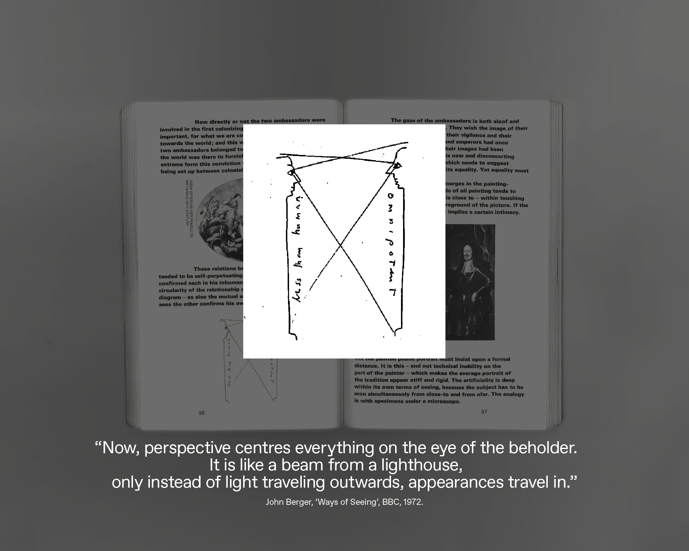
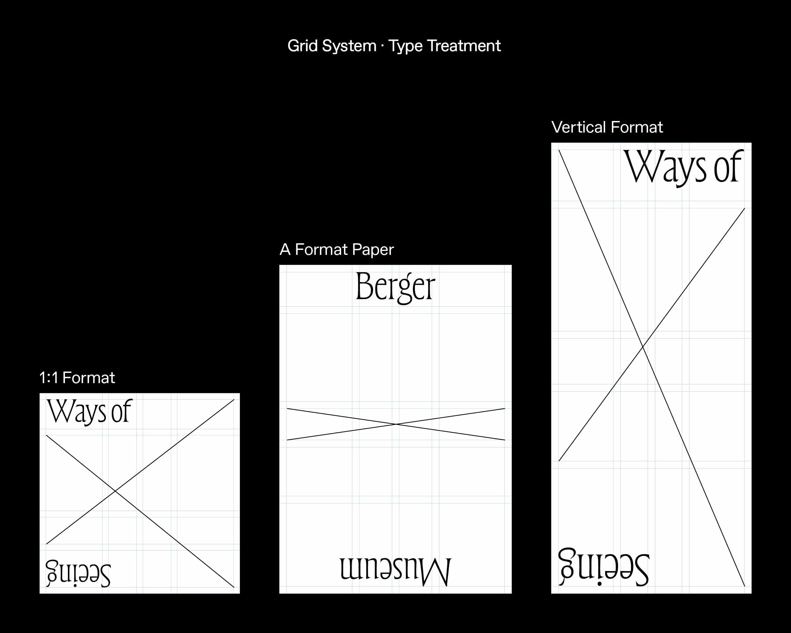
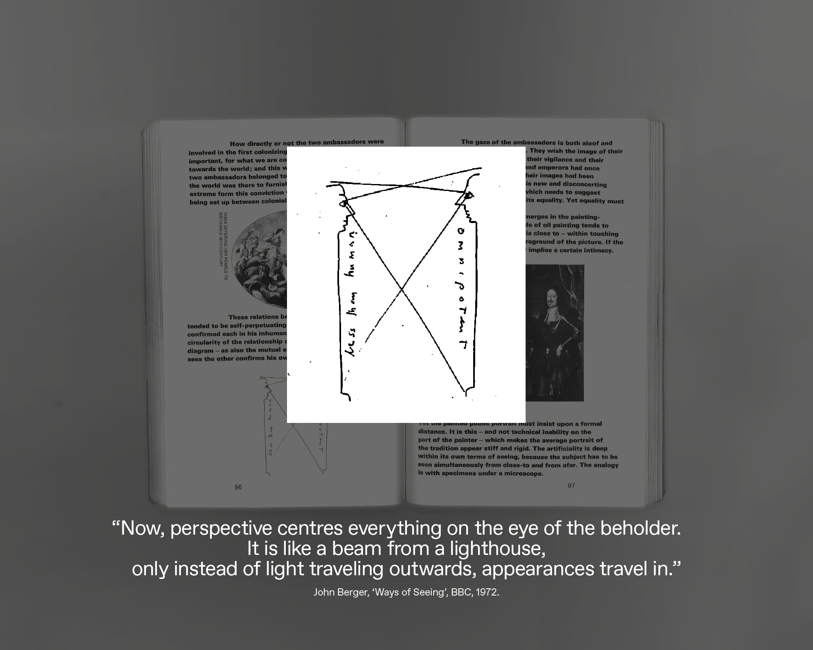
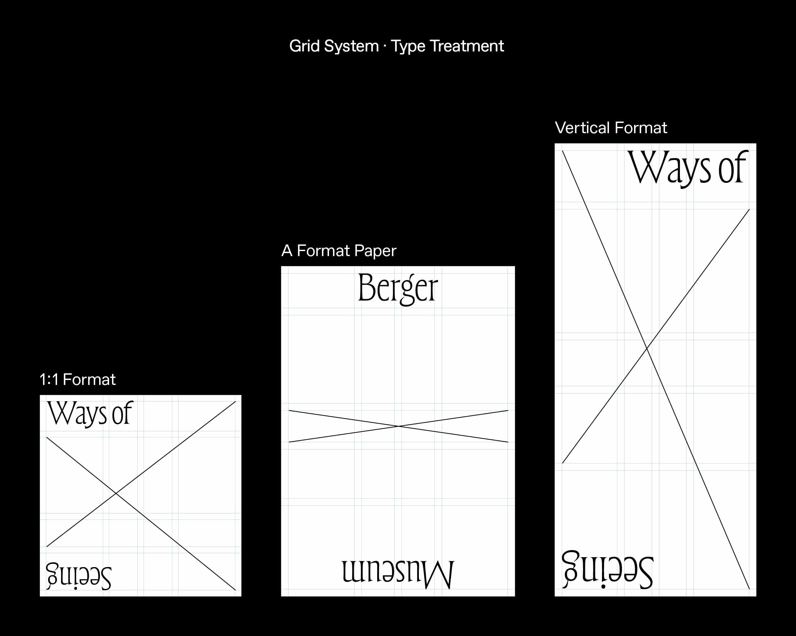

#
Museum · Exhibition Identity
Title
Berger Museum
Client
N/A. Student Work at MICA
Year
2023
Berger Museum and its permanent exhibit "Ways of Seeing" is a theoretical museum exhibition in light of the British art critic, writer, and painter John Berger. The visual identity system was composed of two lines. It was a simple idea initiated from ‘perspective’ diagrams. As he mentioned, "You are seeing them in the context of your own life.", the two lines show variant forms to resemble distinctive perspectives from the eye of the beholder.
* Photos are used for educational and non-commercial purposes.
 


